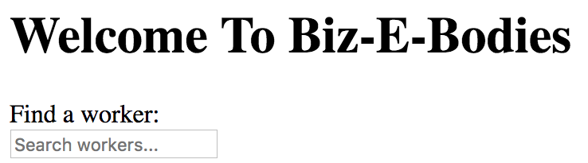

Data-driven widgets
Overview
The Dojo 2 widget system provides a functional API that strives to strictly enforce a unidirectional data flow. The only way to interact with a widget is through the properties it exposes, and dealing directly with widget instances is both uncommon and considered an anti-pattern. It may initially be challenging to understand how to build data-driven widgets in such a reactive framework, especially when widgets in past frameworks such as Dojo 1 were so tightly coupled to data store implementations.
In this tutorial we will create a filterable data-driven list widget, demonstrating how Dojo 2 widgets should be decoupled from data providers.
Prerequisites
You can download the demo project and run npm install to get started.
The @dojo/cli command line tool should be installed globally. Refer to the Dojo 2 local installation article for more information.
You also need to be familiar with TypeScript as Dojo 2 uses it extensively. For more information, refer to the TypeScript and Dojo 2 article.
Creating a filterable List widget
TextInput.Before digging into the specifics of wiring a widget to a data source, a basic list widget with a filter input must first be created. Initially, the widget will simply render a Dojo 2 TextInput, with additional functionality to be added. List.ts will contain our implementation, and similarly to widgets created during previous Dojo 2 tutorials, initial dependencies and a class declaration are needed to get started.
List.ts:import { WidgetBase } from '@dojo/widget-core/WidgetBase';
import { v, w } from '@dojo/widget-core/d';
import { theme, ThemeableMixin } from '@dojo/widget-core/mixins/Themeable';
import * as css from '../styles/list.m.css';
export interface ListProperties {
}
const ListBase = ThemeableMixin(WidgetBase);
@theme(css)
export default class List extends ListBase<ListProperties> {
protected render() {
return v('div', [
]);
}
}
This code lays the base foundation for a themeable Dojo 2 widget: it extends the WidgetBase class, it uses the ThemeableMixin, and it defines a render method that returns a virtual DOM. The next step is to import a Dojo 2 TextInput and use it inside the List.
TextInput into List.ts:import TextInput from '@dojo/widgets/textinput/TextInput';
ListProperties interface so that a value and an onInput callback can be passed into the List:export interface ListProperties {
onInput: (value: string) => void;
value: string;
}
The next step in creating an initial filterable list widget is to update its render method to define a TextInput using the w module.
List to render a TextInput using the value and onInput properties.Click the button below to view the solution.
protected onInput({ target: { value } }: any) {
this.properties.onInput(value);
}
protected render() {
return v('div', [
w(TextInput, {
value: this.properties.value,
onInput: this.onInput,
placeholder: 'Filter workers...'
})
]);
}
Before continuing with the List implementation, let’s review and verify the progress so far by adding the current widget to the Biz-E-Bodies application.
Adding a List widget to the application
List widget to the application.We will add the List widget to the existing Banner widget so users can filter a list of workers by name when first visiting the application. The end result should look something like this:

List and the w module into Banner.ts:import { v, w } from '@dojo/widget-core/d';
import List from './List';
Banner to render an array of virtual DOM nodes including the existing <h1> element as well as a List widget.
protected render() {
return [
v('h1', { title: 'I am a title!' }, [ 'Welcome To Biz-E-Bodies' ]),
v('label', ['Find a worker:']),
w(List, {
onInput: (value: string) => null,
value: ''
})
];
}
dojo build --watch and navigate to http://localhost:9999.A solid foundation for a filterable list widget using a Dojo 2 TextInput widget has been created and added to the existing Banner. Thus far, the widget is not connected to an external data source.
Connecting the List to data
List to data using its properties.Traditional widget frameworks like Dojo 1 required developers to tightly couple widget instances to data store instances. For example, it was common for Dojo 1 widget code to expect a store property to exist on a widget instance, and to further expect that store to expose a Dojo-specific data store API. While effective, this method of explicitly connecting widgets to data stores is brittle and forces widgets to call specific methods on stores.
Data-driven widgets in Dojo 2 do not call methods on a store directly (and are not connected directly to a data store at all). Instead widgets request data from their parent widget using callback properties, and the parent passes properties containing relevant data down to its children. The parent can in turn request data from its parent in the same manner, or it can fetch data directly, such as by dispatching an action to an app store like Redux or making an XHR request directly. Dojo 2 widgets can use this parent-driven data approach to enable compatibility with virtually any data provider by strictly decoupling widgets from the stores that power them.
The first step to connecting the List to worker data is to update its properties interface so it can accept a data array.
ListProperties to support passing a data array property into the List:import { WorkerProperties } from './Worker';
export interface ListProperties {
data?: WorkerProperties[];
onInput: (value: string) => void;
value: string;
}
The WorkerProperties interface is imported from the Worker widget so that the TypeScript typings for the data array can be as strict as possible.
The ListProperties interface now defines an optional data property that can be passed into a List widget. This property could have been called by any name other than data; the important takeaway is that data items can now be passed into the List widget using properties. The next step is to update the List to render a list of items based on its new data property.
List so it also renders a <div> for each item in its data array property.
protected renderItems() {
const { data = [] } = this.properties;
return data.map((item: any) => v('div', [ `${item.firstName} ${item.lastName}` ]));
}
protected render() {
return v('div', [
w(TextInput, {
value: this.properties.value,
onInput: this.onInput,
placeholder: 'Filter workers...'
}),
v('div', this.renderItems())
]);
}
The State management tutorial details how to use Dojo 2 Containers and Injectors to inject external state as properties of widgets.
The List widget now renders both a TextInput to accept user input and a list of result items based on its data property. Item rendering is offloaded into a helper method (renderItems) so widgets extending List that need to modify the rendering of items only need to override a small helper method instead of the main render method.
The next step updates the Banner widget to pass the correct data into the List
Banner to the ListCurrently, the application keeps all worker data as a private variable within the App widget. In order to use this data to also power the List, the Banner widget must also be updated to accept a data property so it can in turn pass it down to the List it renders.
BannerProperties interface from the Banner widget so a data array property can be passed into Banner:import { WorkerProperties } from './Worker';
export interface BannerProperties {
data?: WorkerProperties[];
}
WidgetBase to use the new interface:export default class Banner extends WidgetBase<BannerProperties> {
Banner widget in App.ts:w(BannerOutlet, {
data: this._workerData
})
Now that the Banner widget has worker data, it can pass a subset of this data into the List widget based on the current List input value.
List based on its value in Banner.ts: private _data: any[];
protected filterData(value: string) {
const { data = [] } = this.properties;
this._data = data.filter((item: WorkerProperties) => {
const name = `${item.firstName} ${item.lastName}`;
const match = name.toLowerCase().match(new RegExp(`^${value.toLowerCase()}`));
return Boolean(match && match.length > 0);
});
this.invalidate();
}
protected render() {
return [
v('h1', { title: 'I am a title!' }, [ 'Welcome To Biz-E-Bodies' ]),
v('label', ['Find a worker:']),
w(List, {
onInput: this.filterData,
value: '',
data: this._data || this.properties.data
})
];
}
A helper method was added that filters worker data items by name based on a query value. These filtered items are passed to the List as its data, causing the List to render result items if any items exist based on the user-specified filter.
Summary
A filterable list widget was created throughout this tutorial to demonstrate how Dojo 2 widgets have no coupling to a specific data store implementation. Despite the simplicity of this example widget, it demonstrates a key departure from Dojo 1 and other widget frameworks that lack reactivity: data-driven widgets request data from their parent and parents pass data back down to their children.
It’s also important to note that in this tutorial, hardcoded worker data is passed down from the App widget to the Banner widget and ultimately to the List widget, but the data could be provided from any data source, including a remote server. It’s entirely possible for Banner to directly initiate an XHR request for data, and it’s also possible for Banner to dispatch an action to an application store that in turn requests data. The flexibility provided by the widget system makes it so the List is not concerned with the data origin. Instead, data-driven widgets in Dojo 2 both request and receive data using their properties, and the parent is responsible for either relaying or initiating the data request itself.
If you would like, you can download the completed demo application.